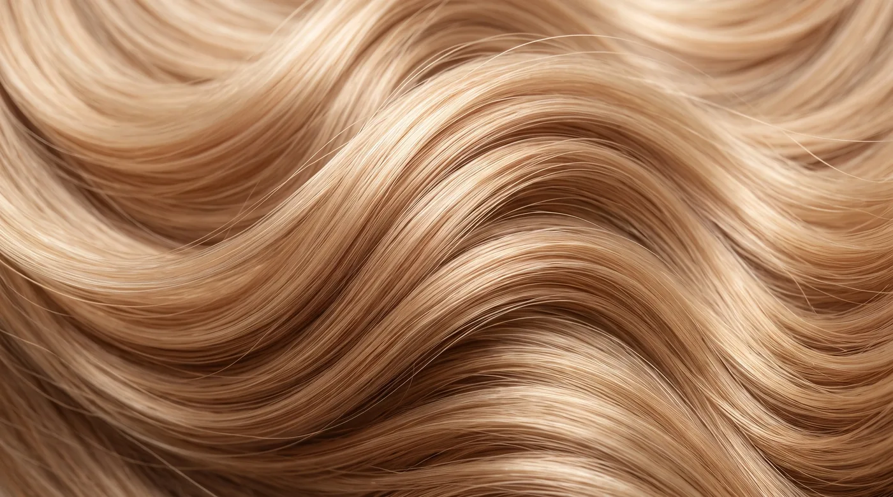
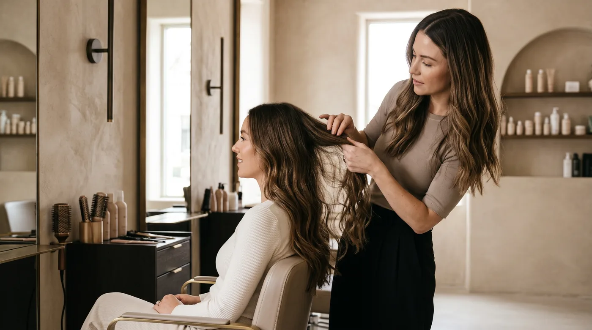

от 5 000 ₸
Стрижки
Женские стрижки, кудрявая стрижка по кудрявому методу, коррекция длины и чёлка.
- Женская стрижка10 000 ₸
- Кудрявая стрижка (по кудрявому методу)15 000 ₸
- Коррекция длины5 000 ₸
- Чёлка5 000 ₸
Стрижки, окрашивание, сложные техники, восстановление и диагностика.

Женские стрижки, кудрявая стрижка по кудрявому методу, коррекция длины и чёлка.

Ровный глубокий цвет по всей длине волос.

Освежение и коррекция оттенка без смены базового цвета.

AirTouch, шатуш, балаяж и комбинированные техники.

Полное осветление с последующим тонированием.

Удаление искусственного пигмента, осветление и создание нового оттенка.

Исправление пятен, полос и нежелательных оттенков.

Восстановление и SPA-уход для здоровья и блеска волос.

Разбор волос, подбор техники и домашнего ухода.
Окончательная стоимость сложных окрашиваний определяется после диагностики и зависит от длины, густоты, состояния волос и сложности работы.